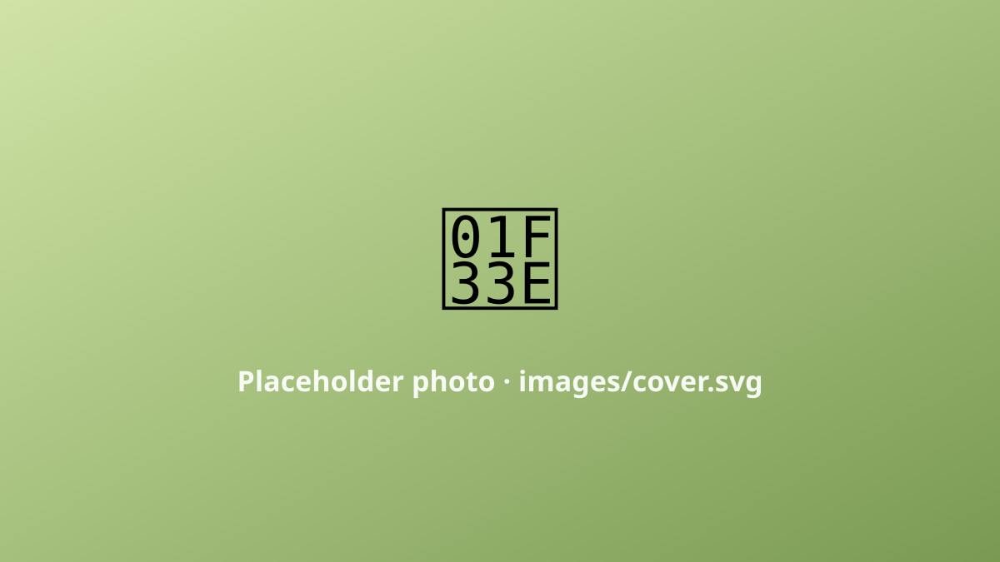

Placeholder ride log
62 kmDistance
1180 mClimbing
★★★☆☆Difficulty
1 dayTime
Biei is a patchwork of rolling farmland in central Hokkaido — the kind of scenery that looks painted. The riding is a constant gentle up-and-down between fields of potato, wheat and, if you time it right, lavender.

images/ folder.The patchwork road
There's no single loop; you just wander the lanes between the famous solitary trees and the striped hillsides. Every crest gives you another postcard.
Summer only
This is a warm-months ride — Hokkaido winters are a different sport entirely. (Full write-up coming; this is a placeholder.)
Would I do it again?
Absolutely. It's short, it's soft, and it's the prettiest 62 km I've turned pedals on.